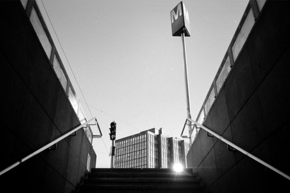
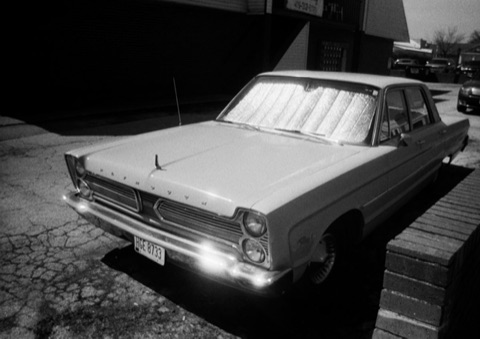

柯达
在产
Tri-X 400 胶卷
- 感光度
- ISO 400
- 类型
- 全色性
- 颗粒
- 中等颗粒
- 尺寸
- 35mm · 120 · 4x5
- 分类
- 传统颗粒
- 状态
- 在产
特性 / 手感 · Character
黑白界最经典的万能卷。宽容度极大、颗粒扎实、反差温暖，被称作‘黑泽明都爱用的稳卷’，街头/纪实/人像皆宜，也适合迫冲。
The most classic all-round black-and-white film. Huge latitude, solid grain, warm contrast - a dependable classic for street, documentary and portrait, and it pushes beautifully.
适用场景 · Best for
街头 人像 纪实 暗光/夜景 迫冲
使用感受
社区对它的态度几乎是「又爱又恨」。 【适合拍】街头、纪实、人像、弱光，也扛得住迫冲——从 EI 800 一路到 12800 都有人玩，宽容度极大、非常容错，曝光差一点也救得回来。 【谁在用它】1954 年推出后，布列松几乎只拍它；罗伯特·弗兰克的《美国人》、温诺格兰德与 Bruce Gilden 的纽约街头、唐·麦卡林在越战的照片、Anton Corbijn 的摇滚人像、萨尔多加的《创世纪》（常迫冲到 800–1600）、森山大道《挑衅》时期（固定迫冲 1600）——用的都是 Tri-X。 【争议】价格在黑白卷里偏高；颗粒明显，想要干净画面的人会转投 T-Max。
参考价格 · Price
二手多为未开封 / 临期或分装卷，行情与全新接近（约全新价 85%–100%）；停产卷稀缺，常高于原价 · 均随市场波动，仅供参考
全新 New
135约¥85–105
120约¥100–135
二手 Used
135约¥72–105
120约¥85–135
实拍样片



© HiroAranoJPN · Janne Karvinen · gf55555 l